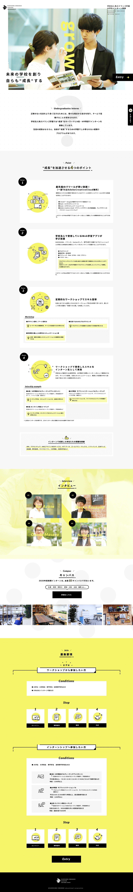

KADOKAWA DWANGO GAKUEN INTERNSHIP
▪︎概要
角川ドワンゴ学園大学生インターンシップ募集のサイト、インターン生を目標400人程度募集したいとの事で制作しました。
▪︎ポイント
400人集めるという点からある程度ハードルを下げつつも教育現場での「成長」というコンセプトがブレないよう伝える部分はしっかり伝わるようなデザインを作成する必要がありました。
その為丸みのある書体(コーディング時に入れ込み)や挿絵、装飾などでハードルを下げた印象にしつつも全体のデザインはシンプルにまとめバランスをとりました。
また「成長」というキーワードが分かりやすく伝わるようキーカラーは心理効果的に連想しやすい黄色を選択。大学生が見る、という点も踏まえ彩度や色の面積を広げ印象に残るように工夫しました。
結果5月時点で応募数は200人弱あり期間に対しての応募数としてはクライアントも満足してくださりました。
 BACK